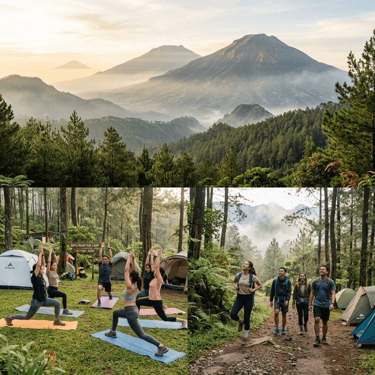

Kawasan Batu Malang seringkali berada pada ketinggian lebih dari 1000 mdpl. Pada bulan-bulan tertentu, layaknya musim kemarau Juli-Agustus, udara malam bisa mendadak drop mencapai belasan derajat celcius menusuk tulang.
Sayangnya, masih banyak petualang pemula yang meremehkan fakta cuaca ini dengan hanya mengenakan jaket *hoodie* berbahan katun saat tidur. Alhasil, momen berkemah yang semestinya digunakan untuk relaksasi berubah menjadi malapetaka hipotermia ringan. Pengalaman tidur menggigil ini cukup membuat jera sebagian orang. Tetapi tenang saja, kami memiliki rahasia ampuhnya.
"Tubuh kita adalah mesin pemanas alami yang paling sempurna. Tugas utama gear kemping Anda bukan sekadar menghangatkan, melainkan memenjarakan panas tubuh tersebut agar tidak menguap tersapu angin." - Adiel Ebert
1. Teknik 'Layering' Tiga Lapis Pakaian
Kesalahan fatal terbesar kemping di area bersuhu ekstrem adalah menggunakan satu lapis jaket yang sangat-sangat tebal. Padahal kunci mempertahankan suhu hangat berada pada metode berlapis (layering).
1.1 Base Layer (Penyerap Keringat)
Ini adalah pakaian terdalam yang bersentuhan dengan kulit (kaos). Gunakan bahan sintetis (polyester/dry-fit) atau wool merino yang bisa menguapkan keringat ke luar. Singkirkan sepenuhnya kaos **katun** (cotton). Katun dapat menampung keringat, dan ketika angin malam berhembus, kaos basah tersebut akan mendinginkan paru-paru Anda dengan fatal.
1.2 Mid Layer (Insulator)
Lapisan tengah berfungsi sebagai insulasi utama penahan panas tubuh. Pakaian jenis jaket _fleece_ (polar), _sweater wool_, atau jaket bulu angsa (_down jacket_) sangat dianjurkan. Bahan bulu angsa sangat unggul untuk menjebak kantung-kantung memanas alami suhu dada.
1.3 Outer Layer (Pelindung Angin dan Air)
Lapis terluar berfungsi untuk memecah terpaan angin luar atau tetesan gerimis embun agar tidak menembus Mid Layer. Pilihlah jaket _windbreaker_ berbahan parasut tebal yang ringan (*waterproof atau water-resistant*). Jaket gunung ini bagaikan tameng pelindung Anda.

2. Pelindung Kepala, Leher, dan Ekstremitas
Tahukah Anda bahwa hampir 30% panas tubuh terbuang lewat ubun-ubun kepala yang terbuka? Segera pasang syal / *buff* di leher dan pakai topi kupluk (_beanie hat_) rajutan berbahan tebal hingga menutupi kedua telinga Anda.

Selain kepala, telapak kaki adalah ujung sirkulasi darah terjauh sehingga paling rentan kebas dan ngilu. Gunakan **kaus kaki tebal dan sarung tangan polar** sesaat sebelum tidur. Jika telapak kaki kedinginan, Anda mustahil bisa tidur berapapun lapisan jaket yang dipakai di badan.

3. Trik Alas Tidur 'Ground Clearance'
Musuh utama Anda saat tidur bukanlah udara dingin di atas, melainkan resapan udara lembap (kondensasi) dari tanah tempat Anda berbaring. Tenda termahal akan percuma tanpa matras isolasi. Gunakan minimal dua tumpukan alas: matras spons biasa, ditumpuk dengan *matras aluminium foil*. Aluminium akan memantulkan suhu tubuh kembali ke atas alih-alih meresap terbuang menyentuh rumput basah.
3.1 Gunakan Sleeping Bag Model Mummy
Pilih sleeping bag bertipe kantong mumi dibanding model tikar persegi panjang. Model mumi mengikuti siluet tubuh (mengecil ke bagian kaki dan mengurung rongga kepala) sehingga meminimalisir celah ruang kosong di mana udara dingin bisa menjebak.

4. FAQ Seputar Antisipasi Cuaca Dingin Batu Malang
5. Kesimpulan
Mengamankan keselamatan dan kenyamanan beristirahat di lokasi elevasi ekstrem membutuhkan investasi manajemen pakaian secara matang. Tinggalkan kain katun penahan keringat, terapkan sistem perlindungan berlapis _layering_ yang tepat, dan bekali diri dengan matras alumunium serta minuman herbal hangat non-teinafein tinggi.
Jika persediaan alat-alat tidur _gear warmth_ Anda tertinggal di rumah, hubungi resepsionis penyewaan alat kemping kami untuk menambal kekurangan persiapan yang bisa berujung penyesalan gigil semalaman.
Adiel Ebert Nakula Shandy
Pendaki gunung tersertifikasi dan instruktur safety lapangan andal. Seringkali ditemui sedang menyeruput teh hijau hangat sembari menatap kilau *citylight* Malang.